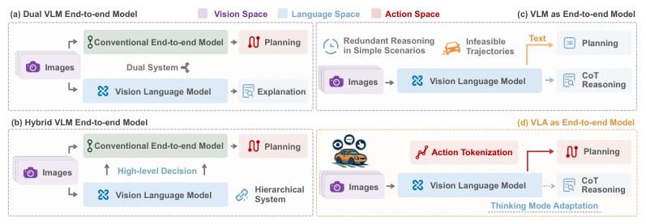
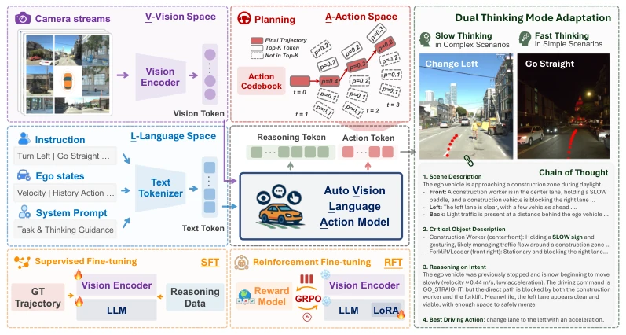
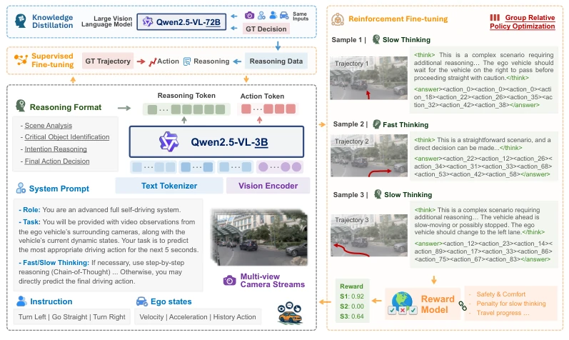
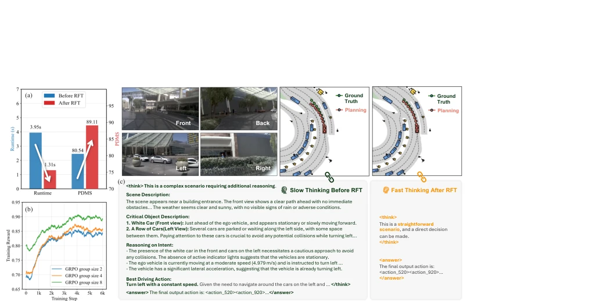
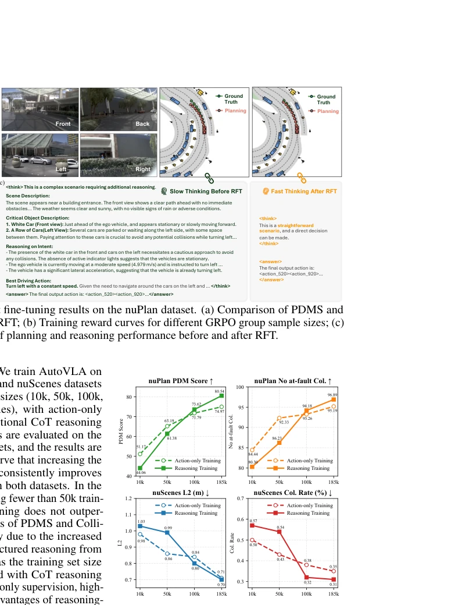

This paper on AutoVLA attempts to directly embed the "brain" of a VLM into the "body" of autonomous driving, developing an end-to-end VLA model. The highlight is an adaptive switch between "fast thinking" and "slow thinking"; for simple road conditions, it directly outputs actions, while for complex conditions, it writes CoT reasoning text, a concept quite like an experienced driver. However, forcibly discretizing continuous trajectories into 2048 Tokens, while solving physical feasibility, might lose details like compressing HD video into a mosaic? RFT uses GRPO to penalize nonsense, which indeed saves time, but can a 3B model running on a vehicle withstand the VRAM and latency? The paper states 1Hz, for L4 autonomous driving, does this count as "real-time"? The data cost for distilling a 72B model is also not low. Overall, it is an ambitious attempt, but still far from a true "experienced driver", especially regarding the trade-off of inference efficiency, which may depend on actual deployment.
Existing end-to-end autonomous driving systems typically have fragmented modules, leading to error accumulation [10, 11]. Although end-to-end models can map sensors to actions [16-19], they lack world knowledge and struggle to handle long-tail scenarios. Existing VLA models face two core pain points: first, action generation is physically infeasible; directly outputting text or waypoints easily leads to mode collapse [35-37]; second, reasoning strategies are rigid; most models fixedly use CoT or fixed strategies and cannot adaptively switch based on scenario complexity [44, 45]. Although DriveVLM proposes a dual-system, it relies on separated modules, with complex architecture and poor scalability [47]. Therefore, a unified architecture is urgently needed that can ensure physical feasibility of actions while achieving a balance between inference efficiency and accuracy.

Figure 2: Four paradigms of VLMs for end-to-end autonomous driving. Compared to other methods, our proposed VLA-based paradigm enables direct trajectory planning and adaptive reasoning from visual inputs. By incorporating physical action tokenization into the language model, our model effectively integrates high-level scene reasoning and low-level trajectory planning.
AutoVLA is based on Qwen2.5-VL-3B as the backbone, inputting multi-view videos, instructions, and vehicle states. The core innovation lies in physical action tokenization, utilizing K-disk clustering to discretize continuous trajectories into 2048 action codes, directly mapped as tokens predictable by the language model. Training is divided into two stages: first the SFT stage, utilizing a 72B large model to distill CoT data, enabling the model to learn two modes: "fast thinking" (direct action output) and "slow thinking" (CoT + action), with the loss function containing language modeling and action prediction parts. Second, the RFT stage adopts the GRPO algorithm, based on PDMS or ADE reward functions, and introduces a CoT length penalty term, encouraging the model to skip reasoning and directly output actions in simple scenarios, thereby reducing inference latency while improving planning performance. Specifically, the action codebook is constructed through K-disk clustering, covering most vehicle motion patterns. The SFT loss function combines negative log-likelihood of language modeling and auxiliary loss of action prediction, and introduces sample weights for CoT existence. The RFT stage utilizes GRPO to optimize strategies, calculating rewards through group relative advantage, effectively balancing planning accuracy and inference overhead.

Figure 1: AutoVLA is an end-to-end autonomous driving framework based on vision-language models that integrates world knowledge into the driving policy. It takes visual observations, vehicle states, and language instructions as input and incorporates CoT reasoning and physical action tokenization to generate planning trajectories directly. The model is trained using supervised fine-tuning to jointly learn reasoning and action, and reinforcement fine-tuning is further applied to enable adaptive reasoning through fast and slow thinking modes, improving performance and efficiency.

Figure 3: Overview of the AutoVLA model and its training process. A pretrained small VLM is used as the backbone of AutoVLA. The model receives multi-view camera streams, system prompts, driving instructions, and vehicle status as input, and outputs textual reasoning and physical action tokens. In SFT, a large VLM model with strong visual understanding capabilities is employed to collect reasoning data, which is used alongside trajectory data in SFT for training the AutoVLA model. In RFT, we utilize GRPO to train the model for improved alignment with verified reward functions, while enabling adaptive reasoning by penalizing excessive reasoning.
Evaluated on nuPlan, Waymo, nuScenes, and CARLA datasets. Open-loop test on NAVSIM benchmark, AutoVLA after RFT improved PDMS, and inference time reduced by 66.8%. Closed-loop test on CARLA Bench2Drive, success rate and driving score better than baselines like UniAD. Ablation experiments show CoT data outperforms action-only supervision under large data volume, and K-disk action tokenization outperforms DCT methods in reconstruction accuracy. Data scaling experiments indicate that increasing training data volume continuously improves performance, verifying the scalability of reasoning-enhanced learning. In specific metrics, nuPlan's PDMS score is significantly higher than TransFuser and Hydra-MDP. In Waymo testing, the RFS metric performed excellently. In CARLA, the driving score reached 78.84, outperforming Orion.

Figure 5: Reinforcement fine-tuning results on the nuPlan dataset. (a) Comparison of PDMS and runtime before and after RFT; (b) Training reward curves for different GRPO group sample sizes; (c) Qualitative comparison of planning and reasoning performance before and after RFT.

Figure 4: Data scaling effect on planning per- formance for nuPlan and nuScenes datasets (log- scaled x-axis). Increasing the amount of training data consistently enhances planning performance.